UI Design
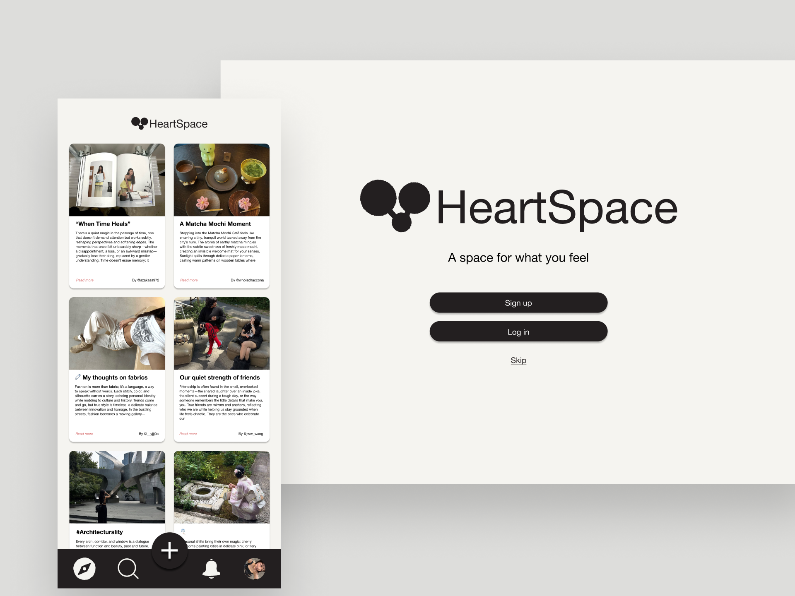
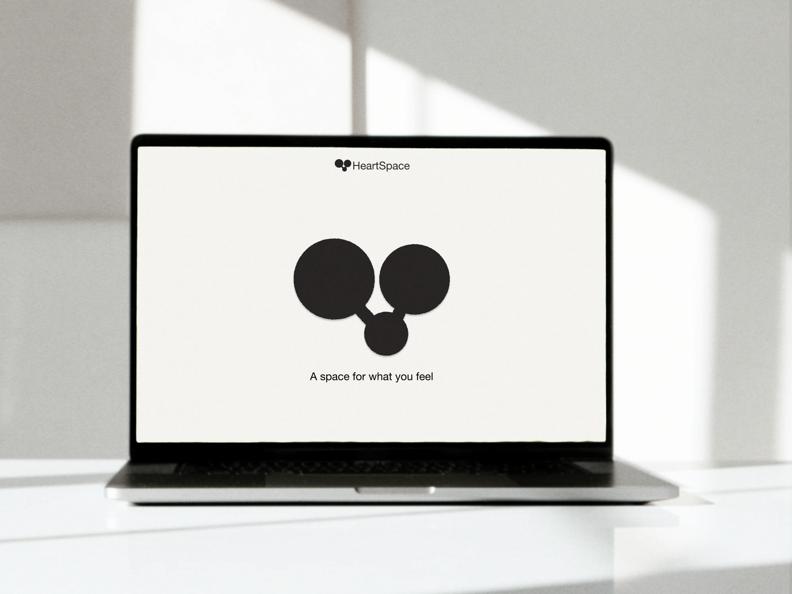
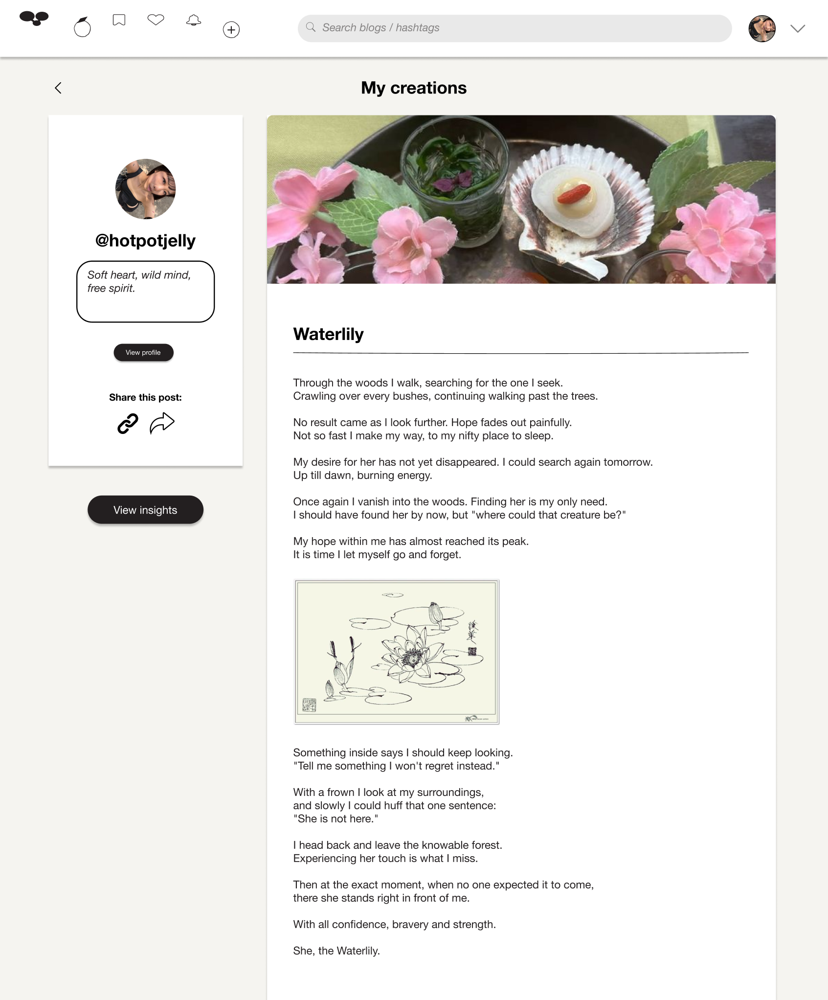
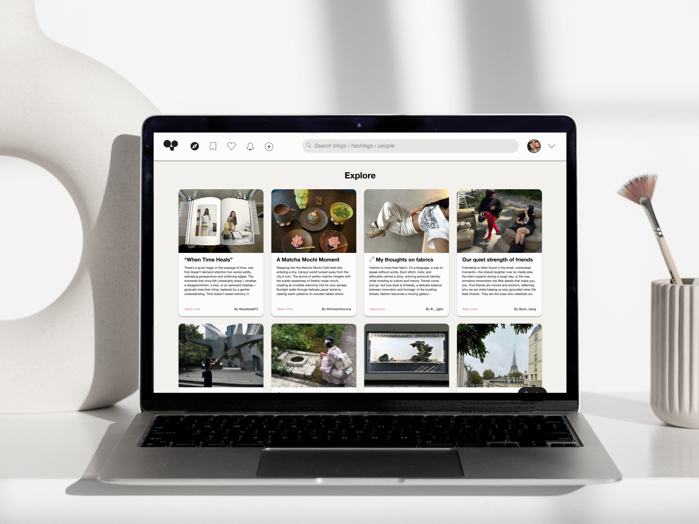
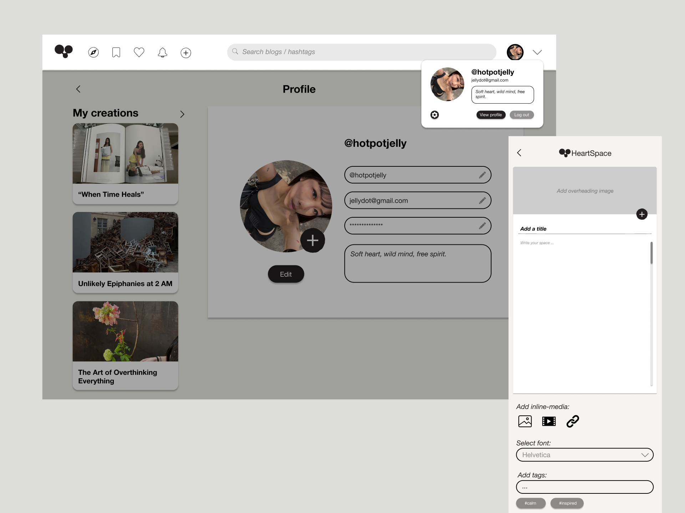
HeartSpace: A Space For What You Feel | Amsterdam, 2025
CLICK to view Product Biography (NL)HeartSpace is a responsive multi-device social journaling platform built in Figma. Grounded in user research and a defined user journey, it enables quick note-style posts on mobile, deeper writing on desktop, and lightweight engagement via smartwatch notifications.
UI Design
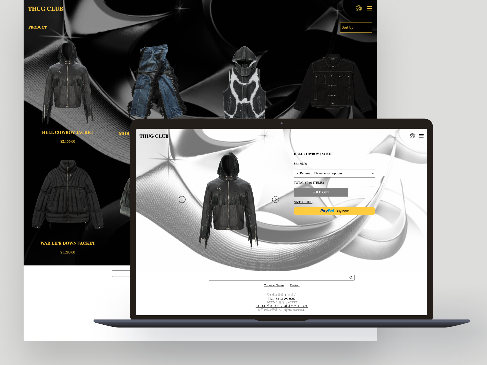
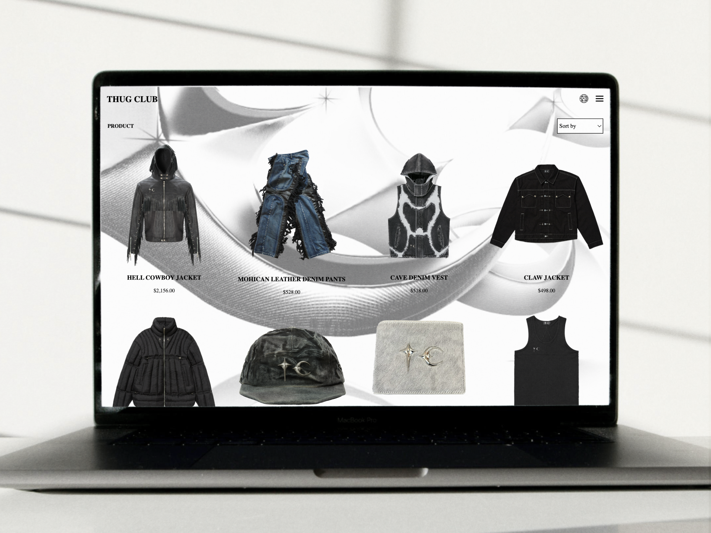
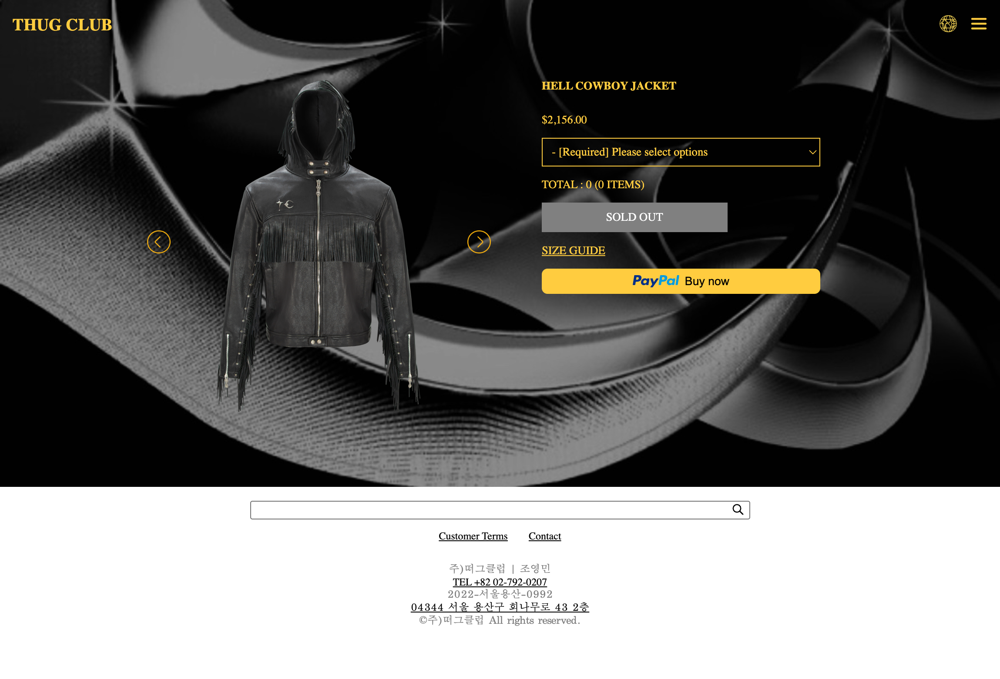
Thug Club Front-end Development | Amsterdam, 2025
CLICK to visit the WebsiteA responsive HTML, CSS, and JavaScript re-designed website developed in VSCode, incorporating research-backed accessibility improvements, including screenreader support. Features include dark and light mode options, enhanced readability, and clean, maintainable code structure.
UI Design


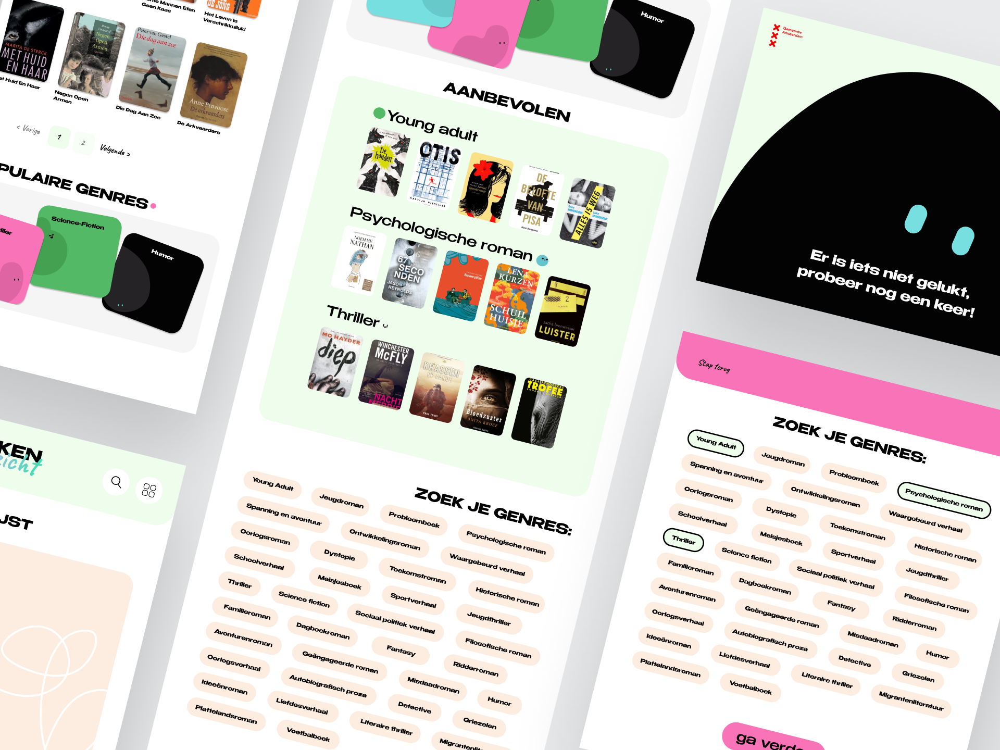
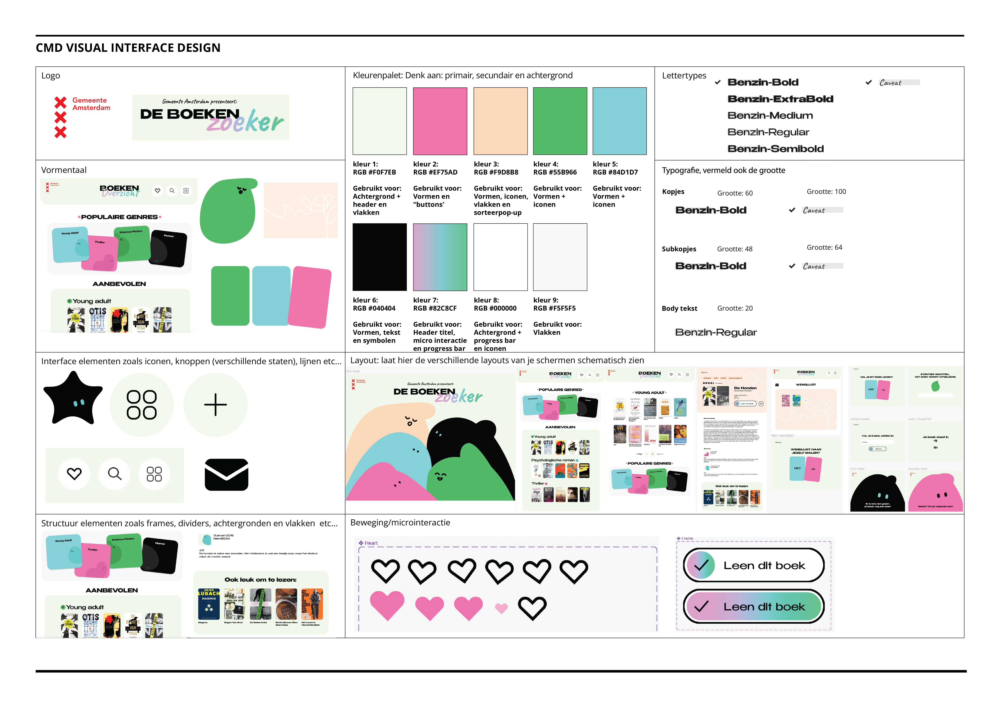
Visual Interface Design | Amsterdam, 2024
"De BoekenZoeker" for Municipality Amsterdam presents a visual user interface on an iPad, designed for high school students that allow them to easily browse and find interesting books to read in the school library.
CLICK to view iteration screens (NL)UI Design


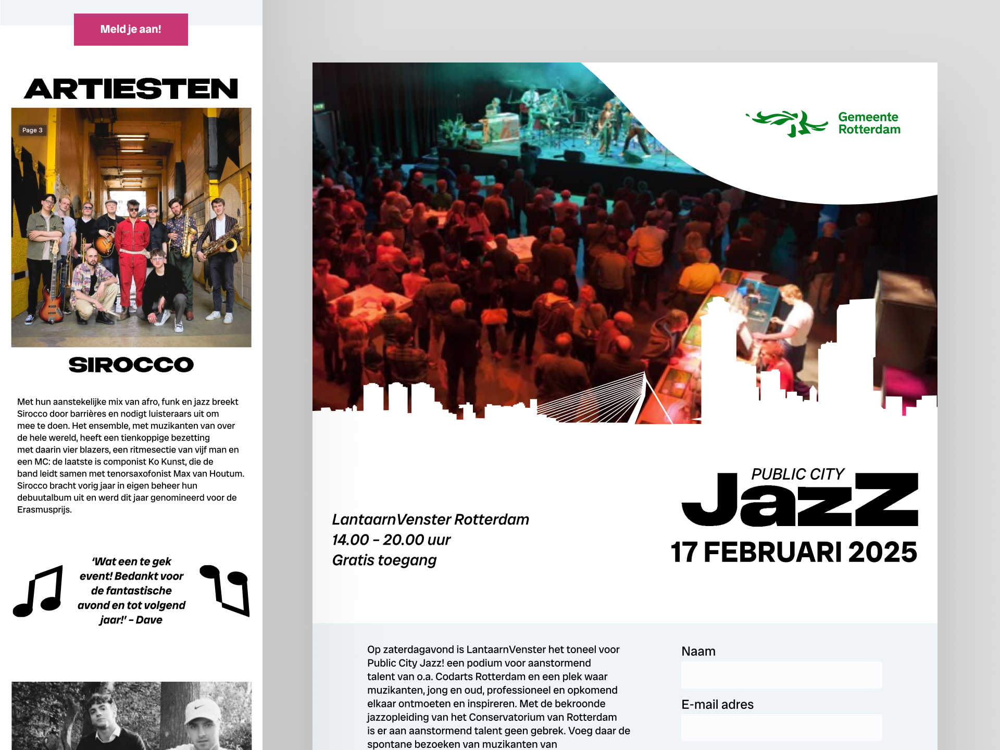
Public City Jazz | Amsterdam, 2024
I designed a responsive event platform for Public City Jazz, following the visual identity of the Municipality of Rotterdam. The focus was on layout, hierarchy, and translating the energy of jazz into a clear and structured interface across multiple screen sizes.
UI Design


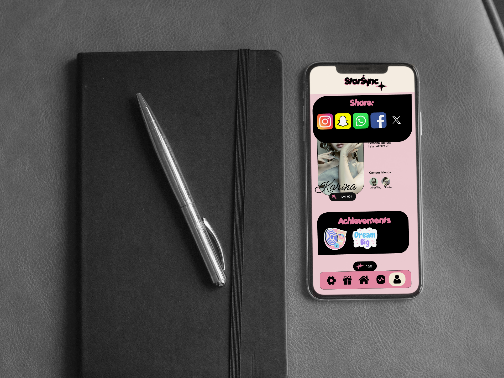
StarSync Community Application | Amsterdam, 2024
CLICK to view Product Biography (NL)At the CMD Amsterdam, I designed an app that co-creates a community within Communication and Multimedia Design, celebrating individuality within the collective.
UI Design


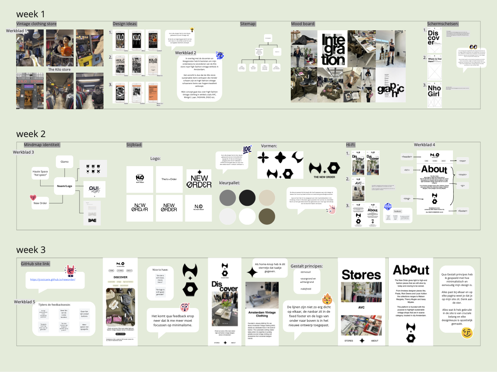
The New Order | Amsterdam, 2024
The first html/css website that is coded on VSCode, with motives of sharing local high-end-vintage shops located in Amsterdam